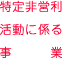

| 特定非営利活動法人イデア九州・アジア |
| 理事長 井手修身、理事7名 |
| 〒810-0001 福岡市中央区天神4-2-36天神第一ビル 4F |
| 平成22年1月20日 |
|
- まちづくり、人づくりに係る異業種交流会「イデア塾」を基に、九州・アジア圏域の集客・交流サービスの産業創出のしくみづくりと人材育成を行う中間支援組織の役割を担うことを目的とする。
- 特に、福岡の自然・伝統・文化や街資源と達人やガイドなどの人的資源を活用した集客・交流サービス
- 産業創出のプラットフォーム（PF）＝福岡の滞在・回遊・体験見本市を創り出し、参加者（来街者、地域住民）への福岡の新しい魅力を提供して、滞在・回遊を促進する。
- また地域側では交流・まちづくり活動、コミュニティ・ビジネス、社会的企業の振興を促進していく。
|
|  |
- ①まちづくり、人づくりに係る異業種交流会「イデア塾」の運営、及び各人の人材育成事業
- ②福岡の滞在・回遊・体験見本市の企画・運営事業
- ③中間支援組織としての交流・まつづくり活動、コミュニティ・ビジネス、社会的企業支援事業
- ④九州における滞在型集客・交流まちづくりのサービスの支援事業
|